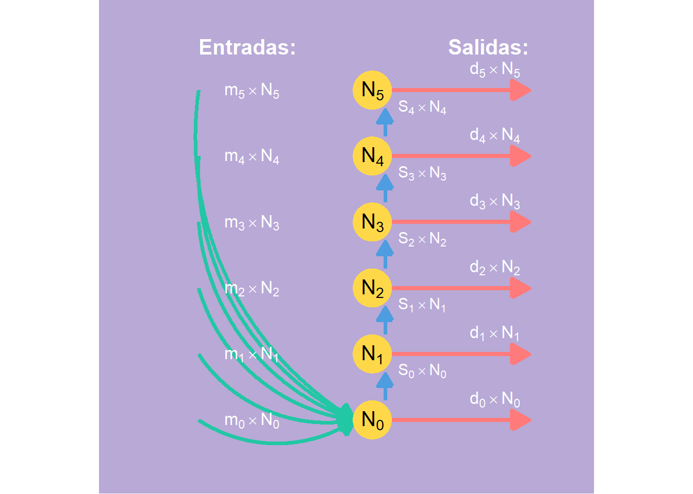
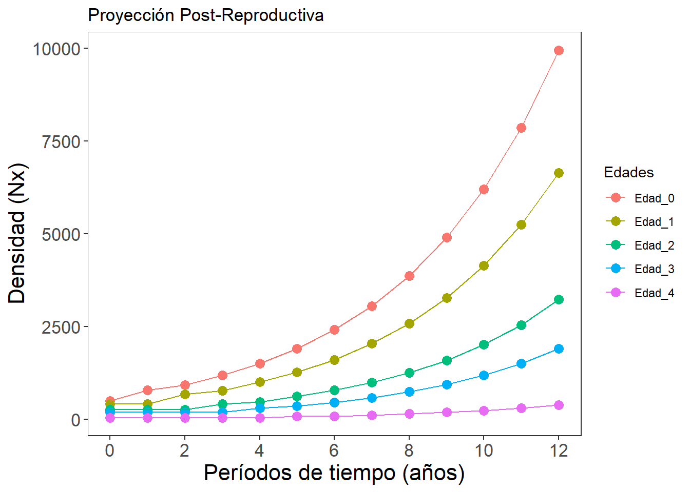
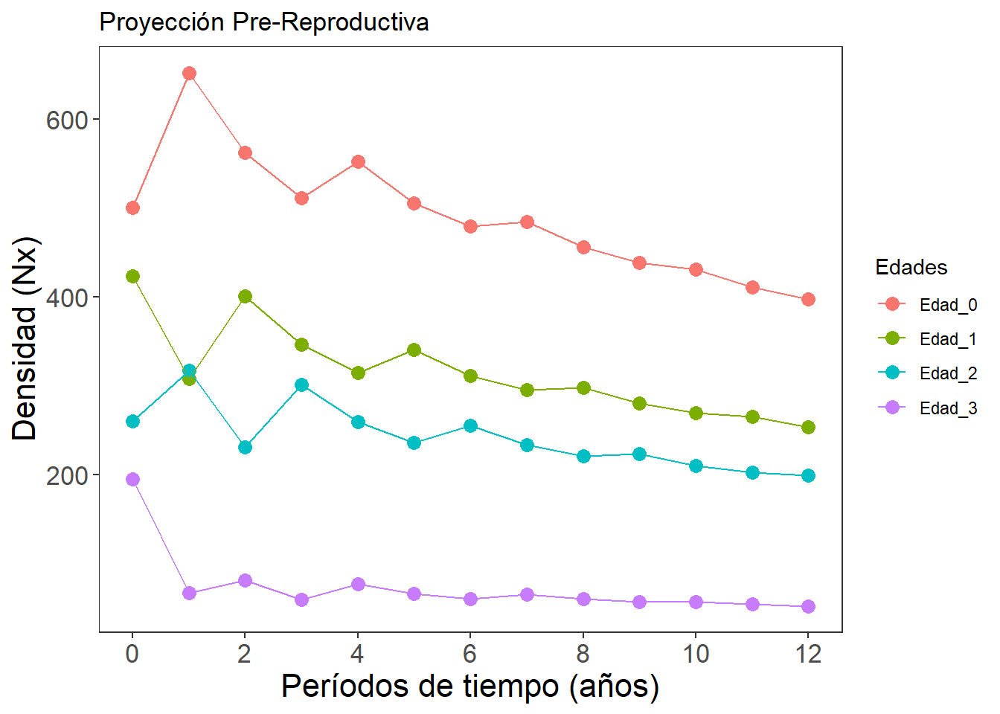

Introducción

Para algunos estudiantes o investigadores en demografía de poblaciones, el trabajo con tablas de vida puede ser demandante de tiempo, algo confuso y tedioso, en cuanto a estimaciones de parámetros de supervivencia, reproducción y otros como la esperanza de vida (\(e_x\)), la distribución estable de edades (\(c_x\)) o el valor reproductivo (\(v_x\)), por lo que los sistemas matriciales, con la ayuda de programas computacionales como R, pueden generar una ayuda al utilizar funciones más prácticas, a la hora de conocer cómo se obtienen esos estimadores junto a las densidades de la población en sus clases de edad o de estado, mediante simulaciones de la densidad poblacional por edades o estados (\(N_t\)) en el tiempo. En este sentido, el presente taller se orienta a la proyección mediante simulaciones, de la densidad poblacional, haciendo uso de matrices de Leslie (\(L\)) y de vectores que representan a la densidad de la población por edades (\(x\)) o clases de edades o estados (\(i\)).
Basicamente nos referimos a diseños exponenciales que pueden asociarse a un modelo balance de masas (Figura 1) en los que las entradas y las salidas son los nacimientos por maternidad (\(m_x\)) y las salidas son las muertes (\(d_x\)) por clases de edades (\(x\)), el almacenamiento es la densidad N por clases de edades, producto de la supervivencia en cada clase de edad (\(S_x\)).
Notación de variables y constantes del sistema.
De acuerdo a la literatura, existen dos formas de construir la tabla de vida para organizar a los individuos por edades: (1) por edades (\(x\)) y (2) por clases de edades (\(i\)).

Se puede utilizar a las edades (\(x\)) si el censo se ha realizado con esa escala de años, como se realizó en el ejercicio anterior de tablas de vida por edades (\(x\)). En la figura anterior se presenta una alternativa de designar a la edad de los individuos por clases de edad (i). Esta figura muestra que un individuo de la clase de edad \(i\) se encuentra entre la edad \(i-1\) e \(i\). Ej. un individuo de la clase de edad 1 está entre la edad 0 y 1. De acuerdo a Bonilla (2004) y a Gotelli (2008), para propósitos de mdelación matricial, la supervivencia vista en las tablas de vida como \(S_x\), se puede representar por clases de edades como \(P_i,\) y la fecundidad \(F_x\), como \(F_i\). Para facilitar el procedimiento de este capítulo, se utilizará la notación de edades, dando continuidad al anterior ejercicio de tablas de vida.
Nota: el siguiente ejercicio continuará con el cálculo manual de las matrices de Leslie (\(L\))), orientadas a la proyección multi edad de la población, basada en estimadores como la fecundidad (\(F_x\)) y la supervivencia (\(S_x\))). Posteriormente se realizarán procedimientos automatizados en R, para hacer la proyección multi edad de una forma más resumida.
Objetivos
- Comprender el funcionamiento de los modelos matriciales de Leslie para la proyección de poblaciones estructuradas por edad.
- Aplicar funciones en R para simular la dinámica de poblaciones con diferentes escenarios reproductivos.
- Identificar la importancia de censos post y pre-reproductivos en los resultados de las proyecciones.
- Desarrollar habilidades en la interpretación ecológica de los resultados de simulaciones poblacionales.
Competencias a desarrollar
- Competencia analítica: Interpretar matrices de Leslie y su aplicación a poblaciones estructuradas.
- Competencia técnica: Programar en R funciones que permitan simular dinámicas poblacionales estructuradas por edades.
- Competencia crítica: Reconocer los supuestos y limitaciones de los modelos matriciales.
- Competencia aplicada: Vincular los resultados de los modelos con escenarios ecológicos y ambientales reales.
Supervivencia y de fecundidad por edades (\(x\))
Horario de maternidad por edades (\(m_x\) o \(b_x\)). Es el número de crías o recien nacidas hembras que nacen por unidad de tiempo, por una madre de una edad particular. Ej, si \(m_3\) = 3, indica que las madres de 3 años de edad, en promedio producen 3 crías o recien nacidos que aportan a la pobación. Normalmente los modelos de poblaciones se hacen solo con las hembras o individuos capaces de producir descendientes. Para la modelación se debe tener en cuenta si la población presenta uno de estos dos patrónes reproductivos:
- Semelpara (en fauna) o monocarpica (en vegetación). Porque habrá un solo evento reproductivo en una edad o clase de edad específica. Esta población tendrá ceros en todos los estados o edades, excepto en uno. Ej. Salmones o algunas especies vegetales.
- Iteropara (en fauna) o policarpica (en vegetación). La reproducción se da en repetidas ocasiones a lo largo del ciclo de vida. Ej. en mamiferos o en algunos árboles.
- Poblaciones anuales o perennes. Las poblaciones que vivien durante un año y las que se mantienen durante varios años.
Supervivencia por clases de edad (\(S_x\)). Corresponde a la probabilidad de que un individuo sobreviva a la clase de edad siguiente:
\[ S_{(x)}=\frac{N_{(x+1)}}{N_{(x)}}. \]
Cálculo de la fecundidad o fertilidad por clases de edad (\(F_x\)). La fecundidad es definida de la siguiente forma:
\(F_{(x)}=m_{(x)}.S_{(0)}\) En caso de que el censo sea pre-reproductivo.
\(F_{(x)}=m_{(x+1)}.S_{(x)}\) En caso de que el censo sea post-reproductivo.
*Estos tipos de censos serán descritos más adelante.
Supervivencia y de fecundidad por clases de edad (\(i\))
Supervivencia por clases de edad (\(P_i\)). Corresponde a la probabilidad de que un individuo sobreviva a la clase de edad siguiente, similar a lo realizado con edades para \(S_x\):
\[ p_{(i)}=\frac{l_{(i)}}{l_{(i-1)}}. \]
Cálculo de la fecundidad o fertilidad por clases de edad (\(F_i\)). La fecundidad es definida de la siguiente forma:
\(F_{(i)}=m_{(i)}.P_{(i)}\)
1) Matriz de Leslie por clases de edad (\(i\)).
Una manera de representar la dinámica poblacional en cuanto a la fecundidad (\(F_x\)) y la supervivencia por cada clase de edad (\(S_x\)), consiste en organizar los datos de la tabla de vida, en una matriz, teniendo en cuenta a la estructura de edades en columnas (tiempo \(t\)) y filas de contribuciones o de supervivencia (en tiempo \(t+1\)). Las matrices se pueden construir a partir de las tablas de vida o a partir de gráficos del ciclo de vida de las poblaciones.
Si la información está organizada a partir de clases de edades, la matriz utilizada es la de Leslie (\(L\)). Lo modelos matriciales de estructuras de estado como las edades (\(x\)), son desarrollados a partir de matrices de Leslie (Leslie, 1954, 1958), consisten la organización parámetros demográficos obtenidos de tablas de vida por edades (\(t_{x0}\)), en tiempos futuros (\(t~x+1~, t~x+2~,..., t~x+n~\)) o de los ciclos de vida.
Las matrices de Leslie, son cuadradas (igual número de filas y de columnas) y se pueden representar por \(k\) clases de edad (\(i\)), entonces la matriz será de \(k\ *\ k\), de la siguiente forma:
\[ L=\left[\begin{array}{ccc} F_{1} & F_{2} & F_{3} & F_{4}\\ P_{1} & 0 & 0 & 0 \\ 0 & P_{2} & 0 & 0 \\ 0 & 0 & P_{3} & 0 \\ \end{array}\right] \]
Cada columna de la matriz es la clase de edad al tiempo (\(t\)) y cada fila es la clase de edad siguiente (\(t+1\)). En esta matriz las fecundidades (\(Fi\)) se ubican en la primera fila, representando las contribuciones a recien nacidos por cada clase de edad. Las supervivencias (\(Pi\)) se ubican en la subdiagonal y el resto de elementos son ceros. \(N_{(t+1)}=L.N_{(t)}\)
Esta ecuación indica que el vector de la población en el tiempo siguiente (\(t+1\)) es igual a la matriz de Leslie (\(L\) es constante) por el vector de la población en el tiempo actual.
| x | Nx | lx | mx | Sx | i | Ni | Pi | Fi |
|---|---|---|---|---|---|---|---|---|
| 0 | 500 | 1.00 | 0.0 | 0.85 | - | - | - | - |
| 1 | 423 | 0.85 | 0.5 | 0.61 | 1 | 923 | 0,85 | 1,35 |
| 2 | 260 | 0.52 | 1.4 | 0.75 | 2 | 260 | 0,61 | 2,01 |
| 3 | 195 | 0.39 | 1.0 | 0.26 | 3 | 195 | 0,75 | 1,75 |
| 4 | 50 | 0.10 | 0.5 | 0.00 | 4 | 50 | 0,26 | 0,76 |
Es así como la matriz de Leslie, para las clases de edad se organizan así:
\[ L=\left[\begin{array}{ccc} 1,35 & 2,01 & 1,75 & 0,76\\ 0,85 & 0 & 0 & 0 \\ 0 & 0,61 & 0 & 0 \\ 0 & 0 & 0,75 & 0 \\ \end{array}\right] \]
2) Matriz de Leslie por edades (\(x\)).
Estas matrices pueden ser construidas a partir de censos posteriores a la etapa reproductiva (post-reproductivo o post-breeding) o pre-reproductivo (pre-breeding). Para el primer caso post-reproductivo) la fecundidad \(F_x = S_x * m_{x+1}\), para el segundo caso (pre-breeding) La fecundidad \(F_x= S_0 * m_x\).
Matriz post-reproductiva (\(F_{post}\)).
La organización de la matriz de Leslie (\(L\)) para este tipo de censo post-reproductivo es de mayor dimensión a la pre-reproductiva, por incorporar a \(S_0\) en la subdiagonal.
\[ L=\left[\begin{array}{ccc} F_{0} & F_{1} & F_{2} & F_{3} & F_{4}\\ S_{0} & 0 & 0 & 0 & 0\\ 0 & S_{1} & 0 & 0 & 0\\ 0 & 0 & S_{2} & 0 & 0\\ 0 & 0 & 0 & S_{3} & 0\\ \end{array}\right] \]
De esta manera, la tabla de vida por edades queda de la siguiente forma:
| x | Nx | lx | mx | Sx | F(post) | F(pre) |
|---|---|---|---|---|---|---|
| 0 | 500 | 1.000 | 0.0 | 0.85 | 0.42 | 0.00 |
| 1 | 423 | 0.846 | 0.5 | 0.61 | 0.86 | 0.42 |
| 2 | 260 | 0.520 | 1.4 | 0.75 | 0.75 | 1.18 |
| 3 | 195 | 0.390 | 1.0 | 0.26 | 0.13 | 0.85 |
| 4 | 50 | 0.100 | 0.5 | 0.00 | 0.00 | 0.42 |
Es así como la matriz de Leslie post-reproductiva, para las edades se organiza así:
\[ L=\left[\begin{array}{ccc} 0,42 & 2,86 & 0,75 & 0,13 & 0\\ 0,85 & 0 & 0 & 0 & 0 \\ 0 & 0,61 & 0 & 0 & 0 \\ 0 & 0 & 0,75 & 0 & 0 \\ 0 & 0 & 0 & 0,26 & 0 \\ \end{array}\right] \]
Una vez que los datos son organizados en matrices de Leslie, se puede realizar una proyección multi-estado (multi-edad) del crecimiento poblacional, multiplicando la matriz L por la densidad poblacional de la tabla de vida (\(N_t\)) que corresponde a un vector columna, con lo cual podremos calcular la densidad poblacional en un siguiente tiempo (\(N_{t+1}\)).
\[ L * N_{t} = N_{t+1}=\left[\begin{array}{ccc} F_{0} & F_{1} & F_{2} & ... & F_{n}\\ S_{0} & 0 & 0 & 0 & 0\\ 0 & S_{1} & 0 & 0 & 0\\ 0 & 0 & ... & 0 & 0\\ 0 & 0 & 0 & S_{q} & 0\\ \end{array}\right] * \left[\begin{array}{ccc} n_{0}\\ n_{1}\\ n_{2}\\ ...\\ n_{n}\\ \end{array}\right] = \left[\begin{array}{ccc} n_{0+1}\\ n_{1+1}\\ n_{2+1}\\ ...\\ n_{n+1}\\ \end{array}\right] \]
Para proyectar la población en tiempos siguientes, la matriz L permanece constante, por lo que se asume que las tasas de fecundidad (\(F_x\)) y supervivencia (\(S_x\)) no cambian, la densidad en los siguientes periodos de tiempo, puede calcularse multiplicando a \(L\) por \(N_t+n\), donde n corresponde al tiempo más reciente de la proyección.
Matriz pre-reproductiva (\(F_{pre}\)).
La organización de la matriz de Leslie (\(L\)) para este tipo de censo es la siguiente:
\[ L=\left[\begin{array}{ccc} F_{0} & F_{1} & F_{2} & F_{3}\\ S_{1} & 0 & 0 & 0 \\ 0 & S_{2} & 0 & 0 \\ 0 & 0 & S_{3} & 0 \\ \end{array}\right] \]
Revisando los datos de fecundidad pre-reproductiva de la Tabla 1, se obtiene la siguiente matriz pre-breeding (\(F_{pre}\)).
\[ L=\left[\begin{array}{ccc} 0 & 0,42 & 1,18 & 0,85\\ 0,61 & 0 & 0 & 0\\ 0 & 0,75 & 0 & 0\\ 0 & 0 & 0,26 & 0\\ \end{array}\right] \]
Una vez que los datos son organizados en la matriz de Leslie pre-reproductiva, se puede realizar una proyección o simulación multi-edad del crecimiento poblacional, similar a lo descrito en la anterior proyección post-reproductiva, multiplicando la matriz \(L\) por la densidad poblacional de la tabla de vida (\(Nt\)) que corresponde a un vector columna, con lo cual podremos calcular la densidad poblacional en un siguiente tiempo (\(N_{t+1}\)).
\[ L * N_{t} = N_{t+1}=\left[\begin{array}{ccc} F_{0} & F_{1} & F_{2} & ... & F_{n}\\ S_{1} & 0 & 0 & 0 & 0\\ 0 & S_{2} & 0 & 0 & 0\\ 0 & 0 & ... & 0 & 0\\ 0 & 0 & 0 & S_{q} & 0\\ \end{array}\right] * \left[\begin{array}{ccc} n_{0}\\ n_{1}\\ n_{2}\\ ...\\ n_{n}\\ \end{array}\right] = \left[\begin{array}{ccc} n_{0+1}\\ n_{1+1}\\ n_{2+1}\\ ...\\ n_{n+1}\\ \end{array}\right] \]
Ejemplo 1. Proyección de la población de la tabla de vida para un censo post-reproductivo.
Dando continuidad al ejercicio con los datos de Gotelli (2001) del capítulo antterior, donde se construyó la tabla de vida con algunos estadísticos demográficos, a continuación se presenta el procedimiento paso a paso para la modelación multi edad de la población en estudio.
Nota: En los pasos 1 a 3 se realiza todo el procedimiento de modelación matemática y gráfica. El paso 4 muestra la forma matricial en la que se pueden calcular estimadores tabulados en el paso 1, como \(\lambda\), \(c_x\) y \(v_x\), con el objetivo de mirar una forma algebraica de estimar estas variables. En el paso 5 se realizan cálculos complementarios, relacionados con el análisis de perturbaciones como la sensibilidad \(S_{ij}\) y la La elasticidad \(e_{ij}\).
Paso 1. Estimadores de estructura de edad - \(F_{(pre)},\ F_{(post)},\ S_{(x)},\ c_{(x)},\ v_{(x)}\).
Corresponde al paso 4 del ejercicio anterior, en el que se construyen los estimadores principales para avanzar en la modelación matricial. La base de datos se puede descargar en el siguiente enlace: gotelli.xlsx.
Librerías requeridas
Código
library(readxl)
library(dplyr)
library(stringr)
library(purrr)
library(tidyr)
library(knitr)
library(kableExtra)
library(ggplot2)| Tasa reprod. neta (Ro) | Tiempo generacional (T) | r_est = ln(R0)/T | r (Euler) | λ = exp(r) |
|---|---|---|---|---|
| 1.591 | 2.042 | 0.227 | 0.236 | 1.266 |
| x | Nx | mx | Sx | F(pre) | F(post) | lx.e-rx | c(x) | erx/lx | e-ry.(ly.my) | Se-ry(ly.my) | v(x) | v(x).norm |
|---|---|---|---|---|---|---|---|---|---|---|---|---|
| 0 | 500 | 0.0 | 0.846 | 0.000 | 0.423 | 1.000 | 0.450 | 1.000 | 0.000 | 1.000 | 1.000 | 1.000 |
| 1 | 423 | 0.5 | 0.615 | 0.423 | 0.861 | 0.668 | 0.300 | 1.497 | 0.334 | 1.000 | 1.496 | 1.497 |
| 2 | 260 | 1.4 | 0.750 | 1.184 | 0.750 | 0.324 | 0.146 | 3.083 | 0.454 | 0.666 | 2.052 | 2.053 |
| 3 | 195 | 1.0 | 0.256 | 0.846 | 0.128 | 0.192 | 0.086 | 5.205 | 0.192 | 0.212 | 1.101 | 1.102 |
| 4 | 50 | 0.5 | 0.000 | 0.423 | 0.000 | 0.039 | 0.017 | 25.702 | 0.019 | 0.019 | 0.500 | 0.500 |
Paso 2. Matrices de Leslie - \(L\) (post y pre reproductivas)
Subdiagonal = \(S_x\) (supervivencias x→x+1). Fila superior = Fpre o Fpost. Incluyo nombres de filas/columnas con Edad_0, Edad_1, ….
La base de datos se puede descargar en el siguiente enlace: gabla2.xlsx.
Código
# Cargar la base de datos "tabla2"
library(readr)
tabla2 <- read_xlsx("tabla2.xlsx", sheet = "tabla2")
# -----------------------------
# Vectores necesarios
# -----------------------------
edades <- tabla2$x # edades: 0,1,2,3,4
Fpre <- tabla2$Fpre # fecundidades pre-reproductivas
Fpost <- tabla2$Fpost # fecundidades post-reproductivas
Sx <- tabla2$Sx # supervivencia de x -> x+1 (S0, S1, ..., S_(k-1); último suele ser 0)
k <- length(edades) # aquí: 5
# Chequeos mínimos
stopifnot(k >= 2, length(Fpre) >= k, length(Fpost) >= k, length(Sx) >= k-1)
# =============================
# Matriz de Leslie PRE (4x4)
# - Trunca la última edad (no aporta fecundidad/continuación)
# - Subdiagonal inicia en S0 (transición 0->1)
# =============================
k_pre <- k - 1 # 4
edades_pre <- edades[1:k_pre] # 0..3
Fpre_pre <- Fpre[1:k_pre] # Fpre para 0..3
Sx_pre <- Sx[(2:k_pre)] # S1, S2, S3 (longitud = k_pre-1)
L_pre <- matrix(0, nrow = k_pre, ncol = k_pre)
L_pre[1, ] <- Fpre_pre
if (k_pre > 1) {
# subdiagonal: filas 2:k_pre, columnas 1:(k_pre-1) reciben S0..S_(k_pre-2)
L_pre[cbind(2:k_pre, 1:(k_pre - 1))] <- Sx_pre
}
dimnames(L_pre) <- list(paste0("Edad_", edades_pre),
paste0("Edad_", edades_pre))
# =============================
# Matriz de Leslie POST (5x5)
# - Completa (todas las edades)
# - Subdiagonal inicia en S0 (transición 0->1)
# =============================
L_post <- matrix(0, nrow = k, ncol = k)
L_post[1, ] <- Fpost
if (k > 1) {
# subdiagonal: filas 2:k, columnas 1:(k-1) reciben S0..S_(k-2)
L_post[cbind(2:k, 1:(k - 1))] <- Sx[1:(k - 1)]
}
dimnames(L_post) <- list(paste0("Edad_", edades),
paste0("Edad_", edades))
# -----------------------------
# Impresión
# -----------------------------
kable(L_pre, digits = 2,
caption = "Matriz de Leslie (pre-reproductiva, 4×4)",
format = "html") |>
kable_styling(full_width = FALSE)| Edad_0 | Edad_1 | Edad_2 | Edad_3 | |
|---|---|---|---|---|
| Edad_0 | 0.00 | 0.42 | 1.18 | 0.85 |
| Edad_1 | 0.62 | 0.00 | 0.00 | 0.00 |
| Edad_2 | 0.00 | 0.75 | 0.00 | 0.00 |
| Edad_3 | 0.00 | 0.00 | 0.26 | 0.00 |
Código
kable(L_post, digits = 2,
caption = "Matriz de Leslie (post-reproductiva, 5×5)",
format = "html") |>
kable_styling(full_width = FALSE)| Edad_0 | Edad_1 | Edad_2 | Edad_3 | Edad_4 | |
|---|---|---|---|---|---|
| Edad_0 | 0.42 | 0.86 | 0.75 | 0.13 | 0 |
| Edad_1 | 0.85 | 0.00 | 0.00 | 0.00 | 0 |
| Edad_2 | 0.00 | 0.62 | 0.00 | 0.00 | 0 |
| Edad_3 | 0.00 | 0.00 | 0.75 | 0.00 | 0 |
| Edad_4 | 0.00 | 0.00 | 0.00 | 0.26 | 0 |
La comparación entre \(L_{pre}\) y \(L_{post}\) muestra claramente cómo el modo de definir la fecundidad condiciona la proyección poblacional:
\(L_{pre}\) concentra aportes en edades intermedias (0.42, 1.18, 0.85). Al no incluir la edad terminal, el “techo” reproductivo se lee antes (edades 1–3). El aumento desde los recien nacidos es más complejo de visualizarse, porque se inicia en \(S_1\) y no en \(S_0\).El resultado es una dinámica que depende fuertemente de quienes superan la primera transición, con dominancia de edades bajas en la estructura y menor persistencia de edades altas (al truncar la terminal).
\(L_{post}\) ajusta por la supervivencia real, representando mejor la dinámica efectiva de la población. Incorpora la supervivencia hacia la edad siguiente (0.42, 0.86, 0.75, 0.13, 0), lo cual representa a un enfoque más real del aporte efectivo por edad.
Esta proyección, equilibra a la supervivencia real y la fecundidad efectiva, proyectando mayor crecimiento que la anterior proyección truncada - \(L_{pre}\), porque no penaliza la transición temprana y no pierde la continuidad en la última edad. También converge a una distribución estable fuertemente juvenil, pero con un motor reproductivo claro en las edades intermedias.
Paso 3. Modelación matricial multiEdad (pre y post reproductiva)
3.1) Proyección post-reproductiva
Paso 1. Cargar el vector de Edades \((N_t)\)
Código
# Población inicial (hipotética)
Nt <- tabla_v$Nx
Nt[1] 500 423 260 195 50Código
# Número de periodos a proyectar en el modelo
t <- 12
t[1] 12Paso 2. Función modelo_pob para automatizar \((N_{(t+1)} = L \cdot N_{(t)})\)
Código
# Funcion (modelo_pob) para modelar la población por las diferentes Edades en el tiempo.
# 1) Elementos de la modelación (Matriz de Leslie - L, Vector de Abundancias - Nt y Periodos a modelar - t)
library(purrr) # proporciona set_names()
modelo_pob <- function(L, Nt, t) {
k <- length(Nt)
out <- matrix(NA_real_, nrow = t + 1, ncol = k)
out[1, ] <- Nt
for (i in 1:t) out[i + 1, ] <- L %*% out[i, ]
as.data.frame(out) |>
purrr::set_names(paste0("Edad_", seq_len(k)))
}Paso 3. Simulación de la proyección \((N_{(t+1)} = L\ . N_{(t)})\)
Código
# 1) Usar la función creada para el producto L x Nt
simulacion <- modelo_pob(as.matrix(L_post), Nt, t)
# 2) Crear la columna Tiempo
simulacion <- simulacion %>%
mutate(Tiempo = 0:(nrow(simulacion)-1))
# 3) Reordenar columnas para que Tiempo sea la primera columna
simulacion <- simulacion %>%
select(Tiempo, everything())
# 4) Visualización rápida (redondeo)
colnames(simulacion) <- c("Tiempo", "Edad_0","Edad_1",
"Edad_2","Edad_3","Edad_4")
# 5) Mostrar un resumen redondeado
head(round(simulacion)) %>%
kbl(caption = "Resumen de la simulación") %>%
kable_classic(full_width = FALSE)| Tiempo | Edad_0 | Edad_1 | Edad_2 | Edad_3 | Edad_4 |
|---|---|---|---|---|---|
| 0 | 500 | 423 | 260 | 195 | 50 |
| 1 | 796 | 423 | 260 | 195 | 50 |
| 2 | 921 | 673 | 260 | 195 | 50 |
| 3 | 1189 | 779 | 414 | 195 | 50 |
| 4 | 1509 | 1006 | 479 | 310 | 50 |
| 5 | 1904 | 1277 | 619 | 359 | 79 |
Código
# 6) Convertir a formato largo
simulacion_l <- simulacion %>%
pivot_longer(cols = -Tiempo,
names_to = "Edad",
values_to = "Abundancia") %>%
mutate(Abundancia = round(Abundancia, 0))
# Mostrar un resumen de la simulación en formato largo
head(simulacion_l) %>%
kbl(caption = "Resumen de la simulación en formato largo") %>%
kable_classic(full_width = FALSE)| Tiempo | Edad | Abundancia |
|---|---|---|
| 0 | Edad_0 | 500 |
| 0 | Edad_1 | 423 |
| 0 | Edad_2 | 260 |
| 0 | Edad_3 | 195 |
| 0 | Edad_4 | 50 |
| 1 | Edad_0 | 796 |
Paso 4. Figura de la proyección multi-Edad
Código
ggplot(simulacion_l, aes(x = Tiempo, y = Abundancia, color = Edad)) +
geom_point(size = 3) +
geom_line() +
labs(x = "Períodos de tiempo (años)",
y = "Densidad (Nx)",
color = "Edades",
title = "Proyección Post-Reproductiva") +
scale_x_continuous(breaks = seq(min(simulacion_l$Tiempo),
max(simulacion_l$Tiempo), by = 2)) +
theme_bw() +
theme(axis.text = element_text(size = 13),
axis.title.x = element_text(size = 16),
axis.title.y = element_text(size = 16),
panel.grid.major = element_blank(),
panel.grid.minor = element_blank())
En la simulación post-reproductiva, La curva muestra un crecimiento exponencial claro en todas las clases de edad. Las edades 0 y 1 son las que concentran el mayor número de individuos a lo largo del tiempo, reforzando la estructura juvenil dominante que ya revelaba el análisis de la tabla de vida y de la matriz \(L_{post}\). Este escenario describe una población que se expande rápidamente, con la base juvenil como motor y con adultos aportando reclutas que mantienen esa explosión demográfica.
Paso 4. Tasa de crecimiento asintótica (\(\lambda\)) y distribución estable por Edades \(c_x\) del censo post-reproductivo.
(\(\lambda\)) es el autovalor dominante de (\(L\)). El vector propio derecho asociado, normalizado a 1, genera la distribución estable por edades.
Código
eig <- eigen(as.matrix(L_post)) # Matriz de autovalores y de autovectores
lambda <- Re(eig$values[1]) # Lambda matricial
w <- Re(eig$vectors[,1])
estable <- w / sum(w) # Vector de distribución estable de Edades
r <- log(lambda)
# Autovalor lambda y c(x)
r[1] 0.2360466Código
lambda[1] 1.266233Código
round(estable, 5) %>%
set_names(rownames(L_post)) Edad_0 Edad_1 Edad_2 Edad_3 Edad_4
0.44970 0.30046 0.14593 0.08644 0.01748 Observaciones a la proyección post-reprod:
- Tasa instantánea de aumento: \(r \approx 0.236\) por intervalo de edad.
Esto equivale a un crecimiento continuo aproximado del 23.6% por intervalo. Es muy cercano al estimado con la tabla de vida (misma metodología de Euler–Lotka), lo que muestra consistencia entre ambos enfoques.
- Autovalor dominante: \(\lambda \approx 1.266\).
La población se multiplica por 1.266 en cada intervalo de edad, es decir, un aumento finito ~26.6% por intervalo.
- Distribución estable de edades (\(c_x\); autovector derecho normalizado):
En el equilibrio estable, casi la mitad de la cohorte se concentra en la edad 0 y otro 30% en la edad 1. Las edades mayores (2–4) sostienen proporciones decrecientes.
Esto implica que la población está dominada por individuos jóvenes.- Tiempo de duplicación: \(t_{dup}=\ln 2 / r \approx 0.693/0.236 \approx 2.94\) intervalos de edad.
Es decir, bajo esta matriz postreproductiva, la población tardaría ~3 clases de edad en duplicarse.
La proyección matricial post-reproductiva indica una población que crece de forma sostenida y moderada (λ≈1.27), concentrada en edades tempranas (estructura juvenil) y con la ventana reproductiva situada en edades intermedias.
3.2) Proyección pre-reproductiva
Para resumir el ejercicio, se trabaja con los pasos 1 y 2, del anterior ejercico.
Paso 1. Cargar el vector de Edades \((N_t)\)
Paso 2. Función modelo_pob para automatizar \((N_{(t+1)} = L \cdot N_{(t)})\)
Paso 3. Simulación de la proyección \((N_{(t+1)} = L\ . N_{(t)})\)
Código
# 1) Usar la función creada para el producto L x Nt
simulacion <- modelo_pob(as.matrix(L_pre), Nt[-5], t[-5])
# 2) Crear la columna Tiempo
simulacion <-
simulacion %>%
mutate(Tiempo = 0:(nrow(simulacion)-1))
# 3) Reordenar columnas para que Tiempo sea la primera columna
simulacion <-
simulacion %>%
select(Tiempo, everything())
# 4) Visualización rápida (redondeo)
colnames(simulacion) <- c("Tiempo", "Edad_0","Edad_1",
"Edad_2", "Edad_3")
# 5) Mostrar un resumen redondeado
head(round(simulacion)) %>%
kbl(caption = "Resumen de la simulación") %>%
kable_classic(full_width = FALSE)| Tiempo | Edad_0 | Edad_1 | Edad_2 | Edad_3 |
|---|---|---|---|---|
| 0 | 500 | 423 | 260 | 195 |
| 1 | 652 | 308 | 317 | 67 |
| 2 | 562 | 401 | 231 | 81 |
| 3 | 511 | 346 | 301 | 59 |
| 4 | 552 | 314 | 259 | 77 |
| 5 | 505 | 340 | 236 | 66 |
Código
library(tidyverse)
# 3) Convertir a formato largo
simulacion_l <- simulacion %>%
pivot_longer(cols = -Tiempo,
names_to = "Edad",
values_to = "Abundancia") %>%
mutate(Abundancia = round(Abundancia, 0))
# Mostrar un resumen de la simulación en formato largo
head(simulacion_l) %>%
kbl(caption = "Resumen de la simulación en formato largo") %>%
kable_classic(full_width = FALSE)| Tiempo | Edad | Abundancia |
|---|---|---|
| 0 | Edad_0 | 500 |
| 0 | Edad_1 | 423 |
| 0 | Edad_2 | 260 |
| 0 | Edad_3 | 195 |
| 1 | Edad_0 | 652 |
| 1 | Edad_1 | 308 |
Paso 4. Figura de la proyección multi-Edad
Código
ggplot(simulacion_l, aes(x = Tiempo, y = Abundancia, color = Edad)) +
geom_point(size = 3) +
geom_line() +
labs(x = "Períodos de tiempo (años)",
y = "Densidad (Nx)",
color = "Edades",
title = "Proyección Pre-Reproductiva") +
scale_x_continuous(breaks = seq(min(simulacion_l$Tiempo),
max(simulacion_l$Tiempo), by = 2)) +
theme_bw() +
theme(axis.text = element_text(size = 13),
axis.title.x = element_text(size = 16),
axis.title.y = element_text(size = 16),
panel.grid.major = element_blank(),
panel.grid.minor = element_blank())
A diferencia del escenario anterior, aquí las curvas declinan con el tiempo. Aunque al inicio se observa un pequeño repunte en la edad 0 (entrada de reclutas exitosos), rápidamente todas las edades entran en descenso progresivo.
La causa está en la estructura misma de la matriz $L_{pre}” al iniciar la subdiagonal en \(S_1\) y truncar la última edad, la transición temprana 0→1 queda penalizada y los adultos apenas aportan fecundidad. Ecológicamente, esto representa un escenario no realista de persistencia, ya que la población, aunque juvenilmente abundante, no alcanza a reemplazarse en el largo plazo y tiende a contraerse.
Paso 4. Tasa de crecimiento asintótica (\(\lambda\)) y distribución estable por Edades \(c_x\) del censo pre-reproductivo.
(\(\lambda\)) es el autovalor dominante de (\(L\)). El vector propio derecho asociado, normalizado a 1, genera la distribución estable por edades.
Código
eig <- eigen(as.matrix(L_pre)) # Matriz de autovalores y de autovectores
lambda <- Re(eig$values[1]) # Lambda matricial
w <- Re(eig$vectors[,1])
estable <- w / sum(w) # Vector de distribución estable de Edades
r <- log(lambda)
# Autovalor lambda y c(x)
r[1] -0.03482504Código
lambda[1] 0.9657744Código
round(estable, 3) %>%
set_names(rownames(L_pre))Edad_0 Edad_1 Edad_2 Edad_3
0.442 0.281 0.219 0.058 Observaciones a la proyección pre-reprod:
- Tasa instantánea de aumento: r≈−0.0348r -0.0348r≈−0.0348 por intervalo de edad.
Esto indica un decrecimiento continuo cercano a 3.5% por intervalo. El signo negativo aclara que, bajo este esquema pre-reproductivo, la población no se reemplaza o no aumenta completamente.
- Autovalor dominante: λ≈0.966.
La población se reduce a 0.9660 veces su tamaño en cada intervalo de tiempo; es decir, un aumento finito negativo de (λ−1)×100 ≈ −3.4% por intervalo. Esto contrasta con el resultado post-reproductivo donde λ≈1.266 (aumento ~26.6% por intervalo).
- Distribución estable de edades (\(c_x\); autovector derecho normalizado):
La población sigue dominada por edades tempranas, pero con una proyección decreciente hacia las edades mayores.
- Tiempo de “reducción a la mitad” (análogo al tiempo de duplicación, pero con \(r<0\)):
\(t_{\frac{1}{2}}=\frac{\ln 2}{|r|}\approx \frac{0.693}{0.0348}\approx 20\) intervalos de edad.
Bajo este escenario, la población tardaría cerca de 20 intervalos de tiempo en reducirse a la mitad. ————————————————————————
Paso 4. Cálculo matricial de la la tasa de crecimiento finito (\(λ\)) distribución estable (\(c_x\)) y el valor reproductivo (\(v_x\)) a partir de la matriz de Leslie (\(L\))
Este paso es complementario al del capítulo anterior en el que \(λ\), \(c_x\) y \(v_x\) se calcularon con los insumos de la tabla de vida y que se vuelven a mostrar en el paso 1 de este ejercicio. A continuación se calcularán esos vectores, a partir de la matriz de Leslie (\(L\)), permitiendo compararlos con los calculados en la tabla de vida, para analizar su nivel de similitud y decidir cuál de las dos formas es la más sencilla o parcimoniosa. A continuación se calculará de forma matricial a:
La tasa finita de aumento de la población (
λ)La estructura estable de edades (
cx).El valor reproductivo (
vx)Análisis de sensibilidad y de elasticidad (
Sijyeij).
Tasa finita de aumento de la población (\(λ\))
Este análisis es conocido como el de autovalores o eigenvalues, de mucha aplicación en ecología, para estimaciones multivariadas (ej. en pca) o en estos análisis de transiciones poblacionales en el tiempo. el análisis de autovalores es el que permite calcular a lambda (λ) o tasa de aumento finito de la población.
\[ Lw=λw \]
En donde w corresponde a los autovectores (vector columna) con el mismo número de filas de la matriz de Leslie (\(L\)). Si la matriz de Leslie es de 2 x 2, entonces:
\[ \left[\begin{array}{ccc} l_{11} & l_{12} \\ l_{21} & l_{21} \\ \end{array}\right] * \left[\begin{array}{ccc} w_{11}\\ w_{21}\\ \end{array}\right] = λ \left[\begin{array}{ccc} w_{11}\\ w_{21}\\ \end{array}\right] \]
Para el ejemplo 1, el cálculo de lambda (\(λ\)) se realiza de la siguiente forma:
Paso 1. Cargar la matriz de transición de Leslie (L).
Código
# Cargar la matriz L post
L_post Edad_0 Edad_1 Edad_2 Edad_3 Edad_4
Edad_0 0.423 0.861 0.75 0.128 0
Edad_1 0.846 0.000 0.00 0.000 0
Edad_2 0.000 0.615 0.00 0.000 0
Edad_3 0.000 0.000 0.75 0.000 0
Edad_4 0.000 0.000 0.00 0.256 0Paso 2. Calcular los autovalores (\(eigen\)) y los autovectores (\(vectors\))
Código
autoval <- eigen(L_post)Paso 3. Calcular el primer autovalor principal que corresponde a la tasa finita de crecimiento de la población.
Código
round((lambda1 <- autoval$values[1]),3)[1] 1.266+0iEste valor de lamnda, indica que el crecimiento promedio anual de la población es de ((lamda-1)*100) del 26% para las diferentes edades evaluadas. Esto se produce una vez la población alcanza su distribución estable.
Otra forma es calcular el valor propio dominantes más grande, pidiendo a R que indique la posición del indice (i) con el valor absoluto más grande de los autovalores o lambdas.
Código
( pos.dom <- which.max( Mod(autoval[["values"]]) ) )[1] 1Paso 4. Ahora se mantiene la parte real usando el comando Re() y descartando la parte imaginaria.
Código
# Extracción del autovalor dominante
round(( Lambda1 <- Re(autoval[["values"]][pos.dom])),3)[1] 1.266Distribución estable de edades (\(c_x\))
Corresponde a un vector el cual indica que cuando todas las tasas demográficas permanecen constantes, el aumento o disminución de la población (dependiendo de si lambda es mayor o menos a 1) alcanzará su distribución estable de edades.
Para el cálculo de cx, se requiere extraer el vector propio o autovector dominante (\(w_1\)) y dividirlo por la sumatoria de sus elementos.
\[ c_{x}=\frac{w_{1}}{\sum(w_{1})}. \]
Paso 1. Cargar la matriz de transición de Leslie (L) post reproductiva.
Código
# Cargar la matriz L post
L_post Edad_0 Edad_1 Edad_2 Edad_3 Edad_4
Edad_0 0.423 0.861 0.75 0.128 0
Edad_1 0.846 0.000 0.00 0.000 0
Edad_2 0.000 0.615 0.00 0.000 0
Edad_3 0.000 0.000 0.75 0.000 0
Edad_4 0.000 0.000 0.00 0.256 0Paso 2. Cálculo de los valores y vectores própios (autoval) y del vector própio dominante (w1).
Código
# Cálculo de autovalores y autovectores de la matriz L
autoval <- eigen(L_post)
# Cálculo del vector propio dominante
w1 <- Re(autoval[["vectors"]][,pos.dom])
w1[1] -0.79301579 -0.52983234 -0.25733558 -0.15242190 -0.03081581Paso 3. Cálculo del vector de distribución estable en proporciones y porcentajes (cx).
Código
# Calculo del vector de distribución estable
cx <- matrix(w1/sum(w1))
rownames(cx) <- c("edad_0","edad_1","edad_2","edad_3","edad_4")
cx <- data.frame(cx)
round(cx, 3) cx
edad_0 0.450
edad_1 0.300
edad_2 0.146
edad_3 0.086
edad_4 0.017Código
# Cálculo de cx en términos porcentuales
cx <- matrix((w1/sum(w1))*100)
rownames(cx) <- c("edad_0","edad_1","edad_2","edad_3","edad_4")
cx <- data.frame(cx)
round(cx, 1) cx
edad_0 45.0
edad_1 30.0
edad_2 14.6
edad_3 8.6
edad_4 1.7Lo anterior indica el porcentaje de aumento que presentará la población en sus diferentes edades, una vez alcance su distribución estable, con una tasa finita de aumento o lambda de 1.265 (26.5% de aumento anual)
Valor reproductivo (\(v_x\))
Brinda información de la importancia reproductiva de los individuos en cada edad, por lo que corresponde a la contribución esperada de los individuos para el mantenimiento de la población, debido a sus reclutas o descendientes exitósos. Para su cálculo, se requiere obtener el vector propio o autovector izquierdo dominante \(v\).
\[ vL=λv \] Se requiere realizar un escalamiento, para que todos los valores resproductivos sean relativos a la primera etapa, que inicia en 1.
\[ \frac{v_{1}}{v_{1[1]}}. \]
Para el ejemplo 1, el cálculo de \(v_x\) se realiza de la siguiente forma:
Paso 1. Cargar la matriz de transición de Leslie (L) post reproductiva.
Código
# Cargar la matriz L post
L_post Edad_0 Edad_1 Edad_2 Edad_3 Edad_4
Edad_0 0.423 0.861 0.75 0.128 0
Edad_1 0.846 0.000 0.00 0.000 0
Edad_2 0.000 0.615 0.00 0.000 0
Edad_3 0.000 0.000 0.75 0.000 0
Edad_4 0.000 0.000 0.00 0.256 0Paso 2. Cálculo del autovector dominante en valores reales \(v_{1}\)
Código
tL <- t(L_post) # Transpuesta de la matriz de Leslie (matriz1)
autoval <- eigen(tL) # Autovalores y autovectores de la matriz transpuesta
pos.dom <- which.max(Mod(autoval$values)) # Valor resproductivo más grande (1)
v1 <- Re(autoval$vectors[,pos.dom]) # Autovector dominante en valores realesPaso 3. Cálculo del vector del valor reproductivo \(v_{x}\)
Código
# Vector de valores reproductivos por cada edad (x)
vx <- matrix(v1/v1[1])
rownames(vx) <- c("edad_0","edad_1","edad_2","edad_3","edad_4")
vx <- data.frame(vx)
round(vx, 2) vx
edad_0 1.00
edad_1 1.00
edad_2 0.65
edad_3 0.10
edad_4 0.00Paso 5. Cálculos especiales. Análisis de Sensibilidad y Elasticidad
Estos elementos hacen parte de los análisis de perturbaciones prospectivas (Lemos et al. 2005), que evalúan el efecto de pequeños cambios en atributos vitales en alguna etapa de la vida en una población de interés, como sus tasas de crecimiento (\(c_{x}\)), de reproducción (\(m_{x}\) o \(F_{x}\)) y de supervivencia (\(l_{x}\) o \(S_{x}\)) y su efecto en una variable respuesta que por lo general es la tasa de crecimiento finito (\(\lambda\)). Esto ayuda a tomar medidas de manejo, orientadas a la conservación o el control de poblaciones, dado que de esta manera es posible conocer la importancia de cada atributo vital mencionado. Estos análisis (Sensibilidad o Elasticidad), permiten simular o proyectar la respuesta de \(\lambda\) debido al cambio en algun atributo vital (\(c_{x}\), \(l_{x}\) o \(S_{x}\), \(m_{x}\) o \(F_{x}\)), para alguna edad o estado en particular. Ej. se puede saber la respuesta de \(\lambda\) si aumenta \(S_{x}\) en alguna proporción específica.
1. Análisis de Sensibilidad
La sensibilidad \(S_{ij}\) mide el impacto absoluto (\(\delta\)) en la tasa finita de crecimiento poblabional \(\lambda\), sobre el cambio absoluto en uno de los elementos de la matriz de transición de Leslie \(L\). De esta forma, las sensibilidades son consideradas contribuciones directas de cada transición en la matriz \(L\), sobre el valor de \(\lambda_{1}\).
\[ S_{ij}=\frac{\delta\lambda}{\delta l_{ij}}=\frac{v_{1[i]} .\omega_{1[j]}}{v_{1} .\omega_{1}} \]
En donde \(l_{ij}\) corresponde al elemento de la matriz de Leslie \(L\) que ha sido alterado de forma absoluta (\(\delta\)). \(v_{1} .\omega_{1}\) es el producto de cada combinación de pares de elementos de los vectores própios dominantes izquierdo y derecho - \(v\) y \(\omega\), respectivamente. El numerador se genera por el valor reproductivo (\(v_{x}\)) del periodo objetivo y la distribución estable del periodo actual (\(\omega_{1}\)).
\[ \left[\begin{array}{ccc} v_{1}\\ v_{2}\\ \end{array}\right] * \left[\begin{array}{ccc} \omega_{1} & \omega_{2} \\ \end{array}\right] = \left[\begin{array}{ccc} v_{1}\omega_{1} & v_{1}\omega_{2}\\ v_{2}\omega_{1} & v_{2}\omega_{2}\\ \end{array}\right] \]
Para el cálculo de la Sensibilidad, se realiza un producto entre el vector del valor reproductivo (\(v_{x}\)) y la transpuesta del vector de distribución estable (\(\omega\)). En el denominador de la ecuación de la sensibilidad S , se realiza la suma de los productos por pares de cada elemento del vector.
\[ v_{11}\omega_{11} + v_{12}\omega_{12} + ... + v_{1n}\omega_{1n}\] Para el ejemplo 1, el cálculo de la Sensibilidad (\(S_{ij}\)) se realiza de la siguiente forma:
Paso 1. Cargar la matriz de transición de Leslie (\(L\)).
Código
# Cargar la base de datos "datos" - matriz1
matriz1 <- read_xlsx("datos.xlsx", sheet = "matriz1")
matriz1# A tibble: 5 × 6
...1 Edad_0 Edad_1 Edad_2 Edad_3 Edad_4
<chr> <dbl> <dbl> <dbl> <dbl> <dbl>
1 Edad_0 0.42 0.86 0.75 0.13 0
2 Edad_1 0.85 0 0 0 0
3 Edad_2 0 0.61 0 0 0
4 Edad_3 0 0 0.75 0 0
5 Edad_4 0 0 0 0.26 0vx1 y cx1son el valor reproductivo (\(v_x\)) y la distribución estable de edades (cx) en formato matricial. vw es el producto de los valores alterados (\(v_{1} .\omega_{1}\)) en el numerador de la ecuación y \(prod\) es la suma de los productos por pares.
Paso 2. Cálculo del estimador de sensibilidad de la matriz
Código
# Valor reproductivo y distribución estable en formato matricial
vx1 = as.matrix(vx)
cx1 = as.matrix(cx)
# Numerador y denominador de la ecuación de sensibilidad
vw = vx1 %*% t(cx1)
prod <- sum(vx1*cx1)
# Cálculo de la sensibilidad (S)
round((s <- vw/prod),2) edad_0 edad_1 edad_2 edad_3 edad_4
edad_0 0.53 0.35 0.17 0.10 0.02
edad_1 0.53 0.35 0.17 0.10 0.02
edad_2 0.34 0.23 0.11 0.07 0.01
edad_3 0.05 0.04 0.02 0.01 0.00
edad_4 0.00 0.00 0.00 0.00 0.00La anterior en la matriz de sensibilidad \(S_{ij}\), resultante de \(\delta\lambda/\delta l_{ij}\) correspondiente a los cambios absolutos de las tasas vitales (cx y vx) sobre la respuesta relativa de \(\lambda\). Para el ejemplo realizado, la mayor sensibilidad es de 0,053, la cual se presenta en el elemento \(l_{11}\) que corresponde a la fecundidad o aporte de individuos recien nacidos (\(F_{0}\)). La segunda mayor sensibilidad es de 0,52, que correrponde al elemento \(l_{21}\) que corresponde a los individuos de edad 0, que sobreviven a la edad 1. Lo anterior implica que cambios absolutos pequeños sobre esos individuos, pueden generar los mayores efectos sobre el incremento finito de la población (\(\lambda\)).
2. Análisis de Elasticidad
En las matrices de transición de Leslie (L), como las escalas de supervivencia no pueden ser mayores a uno, pero las de fecundidad pueden superar esos valores, los análisis de Sensibilidad al ponderar cambios absolutos en los estimadores vitales, pierden relevancia a la hora de hacer comparaciones entre poblaciones de diferentes especies.
En este sentido La elasticidad \(e_{ij}\) mide el impacto proporcional (\(\delta\)) en la tasa finita de crecimiento poblabional \(\lambda\), resultante del cambio proporcional en cada elemento de la matriz de transición de Leslie (L). de esta manera, las elasticidades son estandarizaciones de las matrices de sensibilidad. \(e_{ij}\) está determinada por la siguiente ecuación:
\[ e_{ij}=\left(\frac{l_{ij}}{\lambda}\right)\left(S_{ij}\right) \]
En donde \(l_{ij}\) corresponde al elemento de la matriz de Leslie \(L\) que ha sido alterado de forma proporcional (\(\lambda\)) es la tasa finita de crecimiento de la población y \(S_{ij}\) es la sensibilidad estimada anteriormente. Todos los elementos de la matriz \(e_{ij}\) suman uno, haciendo que sus resultados sean más comparables con los de otras poblaciones.
\[ \sum{e_{ij}}=1 \]
Para el ejemplo 1, el cálculo de la Eslasticidad (\(e_{ij}\)) es muy sencillo y se realiza de la siguiente forma:
Paso 1. Cargar la matriz de transición de Leslie (\(L\)).
Código
# Cargar la base de datos "datos" - matriz1
matriz1 <- read_xlsx("datos.xlsx", sheet = "matriz1")
matriz1# A tibble: 5 × 6
...1 Edad_0 Edad_1 Edad_2 Edad_3 Edad_4
<chr> <dbl> <dbl> <dbl> <dbl> <dbl>
1 Edad_0 0.42 0.86 0.75 0.13 0
2 Edad_1 0.85 0 0 0 0
3 Edad_2 0 0.61 0 0 0
4 Edad_3 0 0 0.75 0 0
5 Edad_4 0 0 0 0.26 0Paso 2. Cálculo de la matriz de elasticidad e_{ij}.
e = Es la matriz de elasticidad a calcular
s = Es la matriz de sensibilidad calculada en el paso anterior.
Lambda1 = Es el autovalor o tasa finita de crecimiento, calculada anteriormente.
Código
e <- (matriz1[,-1]/Lambda1) * s
(round(e, 3)) Edad_0 Edad_1 Edad_2 Edad_3 Edad_4
1 0.175 0.239 0.101 0.01 0
2 0.353 0.000 0.000 0.00 0
3 0.000 0.111 0.000 0.00 0
4 0.000 0.000 0.010 0.00 0
5 0.000 0.000 0.000 0.00 0Para este caso se observa que la supervivencia en la edad 0 (elemento \(l_21\) = 0.35) y la fecundidad de la edad 1 (elemento \(l_12\) = 0.24) son las que tienen mayor efecto sobre \(\lambda\). En este sentido, un cambio en la supervivencia de los recien nacidos (edad 0) o en la fecundidad de los de edad 1, tendra un impacto mayor en el aumento de la población (\(\lambda\)), comparado al resto de tasas vitales, dado a que son las tasas con mayor elasticidad.
La diferencia de este patrón con el generado en la matriz de sensibilidad se presenta porque la matriz de sensibilidad refleja un cambio proporcional de los elementos de la matriz y entre todas suman uno, mientras que las sensibilidades generan un efecto absoluto o de cantidades constantes sobre dichos eleentos.
De las matrices de sensibilidad y de elasticidad se puede concluir, que los elementos que controlan la tasa de crecimiento finito \(\lambda\) en esta población estructurada por edades (\(x\)), son la fecundidad y la supervivencia de las edades 0 y 1. Esto es de mucha importancia para proyectos orientados al control de poblaciones invasoras o aquellas que por el contrario, se encuentren amenazadas por extinción.
Errores comunes e interpretación
- Confundir la matriz de Leslie (valores de fecundidad en la primera fila y de supervivencia en la subdiagonal) con otras matrices de transición.
- Usar valores de fecundidad o supervivencia que no correspondan a probabilidades o tasas válidas.
- Interpretar el vector de abundancias sin considerar si el censo es post-reproductivo o pre-reproductivo, lo cual modifica los resultados.
- No verificar que la dimensión de la matriz y la del vector inicial de abundancias coincidan.
Aplicaciones ecológicas y ambientales
- Proyección de poblaciones de especies amenazadas bajo distintos escenarios de conservación.
- Evaluación del impacto de la extracción selectiva sobre clases de edad reproductivas.
- Análisis de sensibilidad y elasticidad para priorizar etapas de vida críticas en programas de manejo.
- Comparación de escenarios de perturbación ambiental (deforestación, cambio climático) sobre la estructura poblacional.
Cuestionario

1. Realizar la proyección de la población de la tabla de vida (tabla 2)
para un **censo pre-reproductivo,** siguiendo los pasos del ejemplo
1.2. Realizar una revisión del libro “Applied Population Ecology” de
Akcakaya et al. (1999) (p. 133 -- 141)
1. Estudiar la temática de tópicos especiales.
2. Estudiar y analizar la figura 4.7, enfatizando en las
diferencias en censos pre y post reproductivos.
3. Realizar el ejercicio para la construcción de matrices pre y
post reproductivas y la relación de estas con la figura 4.7.3. Realizar una revisión del **libro “Técnicas para el estudio de
poblaciones de Fauna Silvestre"** de Lemos et al. (2005) (p. 116 --
126).
1. ¿Cuál es la diferencia entre matrices de Leslie y de Lefkovitch?
2. ¿Analizar la figura 12, correspondiente al ciclo de vida de una
tortuga?
3. ¿Qué una estructura estable de edades ($c_x$)?
4. Cálculo de la distribución estable de edades ($c_x$) y su
relación con lambda ($λ$) (tasa finita de crecimiento)
Cálculo del valor reproductivo.4. Realizar una revisión del libro “Primer of Ecology” de
Gotelli (2008) (Capitulo 3)
1. Analizar cómo se construye una tabla de vida, incluido sus
estimadores generales ($Ro$, $T$, $r$, $λ$) (tabla 3.1)
2. Descripción de estructuras de edad (p. 59)
3. Cálculo de la matriz de Leslie ($L$) (p. 61)
4. Cálculo de la distribución estable de edades ($c_x$) y su
relación con lambda (tasa finita de crecimiento) (p. 63)
5. Cálculo del valor reproductivo ($v_x$) (p. 67).5. Población de tortugas del desierto
Calcular los siguientes estimadores: $λ$, la estructura estable - $c_x$
y el valor reproductivo - $v_x$, para la siguiente matriz propuesta
por **Doak et al. (1994)**, realizada para **una población de tortugas
del desierto** Gopherus agasizzi, adicionalmente realizar una figura
de su ciclo de vida (tomado del libro de **Lemos et al. (2005)**).\[ Lk = \left[\begin{array}{ccc} 0 & 0 & 0 & 0 & 0 & 2,22 & 3,38 & 4,38\\ 0,716 & 0,567 & 0 & 0 & 0 & 0 & 0 & 0\\ 0 & 0,149 & 0,576 & 0 & 0 & 0 & 0 & 0\\ 0 & 0 & 0,149 & 0,604 & 0 & 0 & 0 & 0\\ 0 & 0 & 0 & 0,235 & 0,56 & 0 & 0 & 0\\ 0 & 0 & 0 & 0 & 0,225 & 0,678 & 0 & 0\\ 0 & 0 & 0 & 0 & 0 & 0,249 & 0,851 & 0\\ 0 & 0 & 0 & 05 & 0 & 0 & 0,016 & 0,86\\ \end{array}\right] \]
\[ N_{t} = \left[\begin{array}{ccc} 2722 \\ 4656 \\ 1692 \\ 664 \\ 372 \\ 28 \\ 523 \\ 66 \\ \end{array}\right] \]
Código
# Matriz Lk (Doak et al. 1994) - 8x8
Lk <- matrix(c(
0, 0, 0, 0, 0, 2.22, 3.38, 4.38,
0.716,0.567,0, 0, 0, 0, 0, 0,
0, 0.149,0.576,0, 0, 0, 0, 0,
0, 0, 0.149,0.604,0, 0, 0, 0,
0, 0, 0, 0.235,0.56, 0, 0, 0,
0, 0, 0, 0, 0.225,0.678,0, 0,
0, 0, 0, 0, 0, 0.249,0.851,0,
0, 0, 0, 0.5, 0, 0, 0.016,0.86
), nrow=8, byrow=TRUE)
# Vector Nt_k
Nt_k <- c(2722, 4656, 1692, 664, 372, 28, 523, 66)
# Edición de la matriz de Leslie
colnames(Lk) <- paste0("Edad_", 1:8)
rownames(Lk) <- paste0("Edad_", 1:8)
# Impresión de la matriz Lk y del vector Nt_k
Lk; Nt_k Edad_1 Edad_2 Edad_3 Edad_4 Edad_5 Edad_6 Edad_7 Edad_8
Edad_1 0.000 0.000 0.000 0.000 0.000 2.220 3.380 4.38
Edad_2 0.716 0.567 0.000 0.000 0.000 0.000 0.000 0.00
Edad_3 0.000 0.149 0.576 0.000 0.000 0.000 0.000 0.00
Edad_4 0.000 0.000 0.149 0.604 0.000 0.000 0.000 0.00
Edad_5 0.000 0.000 0.000 0.235 0.560 0.000 0.000 0.00
Edad_6 0.000 0.000 0.000 0.000 0.225 0.678 0.000 0.00
Edad_7 0.000 0.000 0.000 0.000 0.000 0.249 0.851 0.00
Edad_8 0.000 0.000 0.000 0.500 0.000 0.000 0.016 0.86[1] 2722 4656 1692 664 372 28 523 66Respuesta:
Cálculo de \(\lambda\), \(c_x\) y \(v_x\)
Código
# Autovalor dominante (lambda)
ev <- eigen(Lk)
lambda_k <- Re(ev$values[which.max(Re(ev$values))])
# Estructura estable (autovector derecho normalizado a suma 1)
vR <- Re(ev$vectors[, which.max(Re(ev$values))])
cx <- vR / sum(vR)
# Valor reproductivo (autovector izquierdo de L^T), normalizado a v[1]=1
lev <- eigen(t(Lk))
vL <- Re(lev$vectors[, which.max(Re(lev$values))])
vx <- vL / vL[1]
lambda_k; round(cx, 4); round(vx, 4)[1] 1.108126[1] 0.3204 0.4240 0.1187 0.0351 0.0150 0.0079 0.0076 0.0712[1] 1.0000 1.5477 5.6207 20.0732 5.5034 13.4070 14.2437 17.6523\(\lambda \approx \mathbf{1.1081}\)
\(c_x = [0.3204,\ 0.4240,\ 0.1187,\ 0.0351,\ 0.0150,\ 0.0079,\ 0.0076,\ 0.0712]\)
\(v_x\) (con \(v_1=1\)) \(= [1.0000,\ 1.5477,\ 5.6207,\ 20.0732,\ 5.5034,\ 13.4070,\ 14.2437,\ 17.6523]\)
Análisis del resultado
Como \(\lambda>1\) (≈1.108), la población aumenta de forma finita en un 10,8%.
\(c_x\) resalta peso en Edad_2 y una fracción notable en Edad_8 ⇒ longevidad y aporte tardío.
\(v_x\) aumenta hacia clases altas ⇒ adultos mayores tienen mayor valor marginal para la dinámica (contribución al crecimiento a largo plazo).
Manejo de la población: reducir mortalidad juvenil (Edad_2–3) y sostener fecundidad de adultas (Edad_6–8) eleva \(\lambda\).
6. Población de anfibios de un humedal
Calcule \(\lambda\), \(c_x\) y \(v_x\).
Código
L_anfib <- matrix(c(
0, 0, 0.5, 1.2, 1.8, 2.4,
0.7, 0, 0, 0, 0, 0,
0, 0.6, 0, 0, 0, 0,
0, 0, 0.55,0, 0, 0,
0, 0, 0, 0.5, 0, 0,
0, 0, 0, 0, 0.45,0
), nrow = 6, byrow = TRUE)
Nt_anfib <- c(400, 300, 200, 150, 80, 40)
colnames(L_anfib) <- rownames(L_anfib) <- paste0("Edad_",1:6)
lam_anfib <- Re(eigen(L_anfib)$values[which.max(Re(eigen(L_anfib)$values))])
Vr_anfib <- Re(eigen(L_anfib)$vectors[,which.max(Re(eigen(L_anfib)$values))]);
c_anfib <- Vr_anfib/sum(Vr_anfib)
vL_anfib <- Re(eigen(t(L_anfib))$vectors[,which.max(Re(eigen(t(L_anfib))$values))]);
v_anfib <- vL_anfib/vL_anfib[1]
lam_anfib; round(c_anfib,4); round(v_anfib,4)[1] 0.9551133[1] 0.3756 0.2753 0.1729 0.0996 0.0521 0.0246[1] 1.0000 1.3644 2.1720 2.8627 3.0685 2.5128\(\lambda \approx 0.9551\); \(c_x \approx [0.3756, 0.2753, 0.1729, 0.0996, 0.0521, 0.0246]\); \(v_x \approx [1.0000, 1.3644, 2.1720, 2.8627, 3.0685, 2.5128]\).
Análisis del resultado:
\(\lambda<1\) ⇒ declive. Priorizar transición Edad_1→2 y fecundidad de Edad_4–6.
7. Población de peces estuarinos
Código
L_pez <- matrix(c(
0, 0, 0, 1.0, 1.5, 2.2,
0.65,0, 0, 0, 0, 0,
0, 0.6, 0, 0, 0, 0,
0, 0, 0.5, 0, 0, 0,
0, 0, 0, 0.5, 0, 0,
0, 0, 0, 0, 0.4, 0
), nrow = 6, byrow = TRUE)
Ntpez <- c(800, 500, 300, 200, 120, 60)
colnames(L_pez) <- rownames(L_pez) <- paste0("Edad_",1:6)
lam_pez <- Re(eigen(L_pez)$values[which.max(Re(eigen(L_pez)$values))])
vr_pez <- Re(eigen(L_pez)$vectors[,which.max(Re(eigen(L_pez)$values))]);
c_pez <- vr_pez/sum(vr_pez)
vL_pez <- Re(eigen(t(L_pez))$vectors[,which.max(Re(eigen(t(L_pez))$values))]);
v_pez <- vL_pez/vL_pez[1]
lam_pez; round(c_pez,4); round(v_pez,4)[1] 0.8374936[1] 0.3382 0.2625 0.1880 0.1123 0.0670 0.0320[1] 1.0000 1.2885 1.7985 3.0124 3.0457 2.6269\(\lambda \approx 0.8375\); \(c_x \approx [0.3382, 0.2625, 0.1880, 0.1123, 0.0670, 0.0320]\); \(v_x \approx [1.0000, 1.2885, 1.7985, 3.0124, 3.0457, 2.6269]\).
Análisis:
Declive moderado. Mejorar supervivencia subadulta y fecundidad de Edad_5–6.
8. Población de aves de manglar
Código
L6_3 <- matrix(c(
0, 0.2, 0.6, 0.9, 1.3, 1.7,
0.6, 0, 0, 0, 0, 0,
0, 0.55,0, 0, 0, 0,
0, 0, 0.55,0, 0, 0,
0, 0, 0, 0.5, 0, 0,
0, 0, 0, 0, 0.45,0
), nrow = 6, byrow = TRUE)
Nt6_3 <- c(600, 450, 250, 150, 90, 50)
colnames(L6_3) <- rownames(L6_3) <- paste0("Edad_",1:6)
lam6_3 <- Re(eigen(L6_3)$values[which.max(Re(eigen(L6_3)$values))])
vR6_3 <- Re(eigen(L6_3)$vectors[,which.max(Re(eigen(L6_3)$values))]); c6_3 <- vR6_3/sum(vR6_3)
vL6_3 <- Re(eigen(t(L6_3))$vectors[,which.max(Re(eigen(t(L6_3))$values))]); v6_3 <- vL6_3/vL6_3[1]
lam6_3; round(c6_3,4); round(v6_3,4)[1] 0.8998032[1] 0.3951 0.2634 0.1610 0.0984 0.0547 0.0274[1] 1.0000 1.4997 2.0898 2.3281 2.3896 1.8893\(\lambda \approx 0.8998\); \(c_x \approx [0.3951, 0.2634, 0.1610, 0.0984, 0.0547, 0.0274]\); \(v_x \approx [1.0000, 1.4997, 2.0898, 2.3281, 2.3896, 1.8893]\).
Análisis:
Casi estable pero \(<1\). Mejorar fecundidad Edad_3–4 y reducir mortalidad temprana.
9. Población de mamíferos frugívoros
Código
# --- Datos
L6_4 <- matrix(c(
0, 0, 0.4, 0.8, 1.1, 1.6,
0.7, 0, 0, 0, 0, 0,
0, 0.65,0, 0, 0, 0,
0, 0, 0.6, 0, 0, 0,
0, 0, 0, 0.55,0, 0,
0, 0, 0, 0, 0.5, 0
), nrow = 6, byrow = TRUE)
colnames(L6_4) <- rownames(L6_4) <- paste0("Edad_",1:6)
# --- Autovalores/vectores (derecho = estructura estable; izquierdo = valor reproductivo)
E <- eigen(L6_4)
i <- which.max(Re(E$values)) # índice del autovalor dominante
lam6_4 <- Re(E$values[i]) # λ
vR6_4 <- Re(E$vectors[, i]) # autovector derecho
c6_4 <- vR6_4 / sum(vR6_4) # estructura estable normalizada a suma = 1
Et <- eigen(t(L6_4))
j <- which.max(Re(Et$values))
vL6_4 <- Re(Et$vectors[, j]) # autovector izquierdo
v6_4 <- vL6_4 / vL6_4[1] # valor reproductivo normalizado a v1 = 1
# --- Resultados
lam6_4[1] 0.9173409Código
round(c6_4, 4)[1] 0.3350 0.2556 0.1811 0.1185 0.0710 0.0387Código
round(v6_4, 4)[1] 1.0000 1.3105 1.8495 2.1610 2.1498 1.7442\(\lambda \approx 0.9173\); \(c_x \approx [0.3350, 0.2556, 0.1811, 0.1185, 0.0710, 0.0387]\); \(v_x \approx [1.0000, 1.3105, 1.8495, 2.1610, 2.1498, 1.7442]\).
Análisis:
Leve decrecimiento. Potenciar Edad_3→4 y fecundidad Edad_5–6.
10. Población de reptiles xerófilos
Código
# --- Datos
L6_5 <- matrix(c(
0, 0.1, 0.5, 1.0, 1.4, 2.0,
0.6, 0, 0, 0, 0, 0,
0, 0.6, 0, 0, 0, 0,
0, 0, 0.6, 0, 0, 0,
0, 0, 0, 0.6, 0, 0,
0, 0, 0, 0, 0.6, 0
), nrow = 6, byrow = TRUE)
colnames(L6_5) <- rownames(L6_5) <- paste0("Edad_",1:6)
Nt6_5 <- c(500, 350, 220, 150, 100, 60)
# --- Autovalor dominante y vectores propios
E <- eigen(L6_5)
i <- which.max(Re(E$values))
lam6_5 <- Re(E$values[i])
vR6_5 <- Re(E$vectors[, i]) # autovector derecho
c6_5 <- vR6_5 / sum(vR6_5) # estructura estable (suma = 1)
Et <- eigen(t(L6_5))
j <- which.max(Re(Et$values))
vL6_5 <- Re(Et$vectors[, j]) # autovector izquierdo
v6_5 <- vL6_5 / vL6_5[1] # valor reproductivo con v1 = 1
# (opcional) Normalizar para que v^T c = 1
v6_5_vtc1 <- v6_5 / as.numeric(t(v6_5) %*% c6_5)
# --- Resultados resumidos
lam6_5[1] 0.9472754Código
round(c6_5, 4)[1] 0.3919 0.2482 0.1572 0.0996 0.0631 0.0400Código
round(v6_5, 4)[1] 1.0000 1.5788 2.3259 2.8388 2.8152 2.1113Código
# y, si lo usas:
round(v6_5_vtc1, 4)[1] 0.5903 0.9319 1.3729 1.6756 1.6617 1.2462Código
# --- (extra) Proyección 1 paso y lambda realizado del censo actual
Nt_next <- as.numeric(L6_5 %*% Nt6_5)
lambda_realizado <- sum(Nt_next) / sum(Nt6_5)
Nt_next[1] 555 300 210 132 90 60Código
lambda_realizado[1] 0.976087\(\lambda \approx 0.9473\); \(c_x \approx [0.3919, 0.2482, 0.1572, 0.0996, 0.0631, 0.0400]\); \(v_x \approx [1.0000, 1.5788, 2.3259, 2.8388, 2.8152, 2.1113]\).
Análisis:
Muy cercano a la estabilidad (\(\lambda<1\) por poco). Incrementos modestos en fecundidad Edad_3–6 o supervivencia temprana podrían llevar \(\lambda>1\).
Referentes Bibliográficos
Formulas
- Ecuaciones para tablas de vida y matrices - ENLACE (Se requiere inprimirlas y llevarlas a las sesiones de clase).

Libros Guía
- Libro - Técnicas para el estudio de poblaciones de fauna silvestre (Lemos et al. 2005) - ENLACE_PDF (Revisar desde la página 105).
Citar como: Lemos-Espinal, J. A., Rojas González, R. I., & Zúñiga Vega, J. J. (2005). Técnicas para el estudio de poblaciones de fauna silvestre (No. 04; QL83. 17, L4.).

- Libro: Applied Population Ecology: Principles and Computer Exercises Using RAMAS EcoLab 2.0. (Akçakaya et al. 1999). - ENLACE
Citar como: Akçakaya, H. R., Burgman, M. A., & Ginzburg, L. R. (1999). Applied population ecology: principles and computer exercises using RAMAS EcoLab 2.0.

- Libro: A Primer of Ecology. (Gotelli, Nicholas J. 2008). - ENLACE.
Citar como: Gotelli, N. J. (2008). A Primer of Ecology (Sinauer, Sunderland, MA).

Artículos sobre tablas de vida
- Chilito y Ospina. 2019. Tabla de vida Erycina pusilla (Orchidaceae) en la finca El Limonar, vereda Clarete, Popayán, Cauca.
- Quispe et al. 2015. Ciclo biológico y Tabla de Vida de Aedes aegypti, en laboratorio: Trujillo (Perú), 2014
- Gamboa y camacho. 2001. Tabla de vida del lobo marino de California Zalophus californianus californianus en la lobera Los Islotes, B.C.S., México.
- Orozco et al. 1990. Efecto de la temperatura sobre la tabla de vida de Oligonychus yothersi en Coffea arabica
- González. 1987. Tabla de vida para Phoracantha semipunctata Fab. (Col. Cerambycidae). Perforador de los eucaliptos, en el Sudoeste español
Artículos sobre modelación matricial de poblaciones
- Castillo. 2012. Dinámica poblacional del murciélago vampiro Desmodus rotundus (Chiroptera: Phyllostomidae) en la Reserva de la Biosfera Barranca de Metztitlán, Hidalgo, México. Tesis de Maestría.
- Villavicencio et al. 2017. Dos Modelos para el Estudio de la Dinámica Poblacional de Peces Tilapia en Condiciones de Cultivo